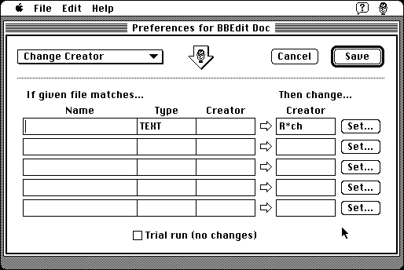

Download
Odd-Jobs-1.5.zip (311K) Odd Jobs 1.5 repackaged into a zipped hfs disk image and checksum file. The disk image can be mounted with Mini vMac.
Odd-Jobs-1.5.sit (463K) Odd Jobs 1.5 in the original format.
copyright: Andrew Trevorrow
mod date: May 22, 2000
license: shareware
from url :
Odd Jobs
A “collection of powerful file-processing tasks for the Mac.” The application can create “joblets”, onto which you can drag files “files/folders/disks” to perform tasks such as setting file type and creator, changing line endings, deleting power pc code, and more. For “System 7 or later.”

If you find these downloads useful, please consider helping the Gryphel Project, which hosts them.
Here are the md5 checksums for the downloads, signed with Gryphel Key 5:
--------- GRY SIGNED TEXT --------- b46e4ca36b8b5da2756d93b09e5b965c Odd-Jobs-1.5.zip f7d37ff01bb706ad3143ec6fca54ddd7 Odd-Jobs-1.5.sit ------- BEGIN GRY SIGNATURE ------- Gry/4Xa8CFcUzxdN/GDVNDzXT9TMryt0gKd9UNCcyjlPNiywKZYzl+SDe+90pUQP /nMuOGru21WI15Z8mZJAcbqfJwDWIybbjhzxn4y3owN3AK7X6l+fUHlxJuuWRiyO gyg/54Y5JuBPukocNyIK9gMNb0jVaiNaqR12G1RufpGIPNKWQXBDV2EcUunS5q5c -------- END GRY SIGNATURE --------